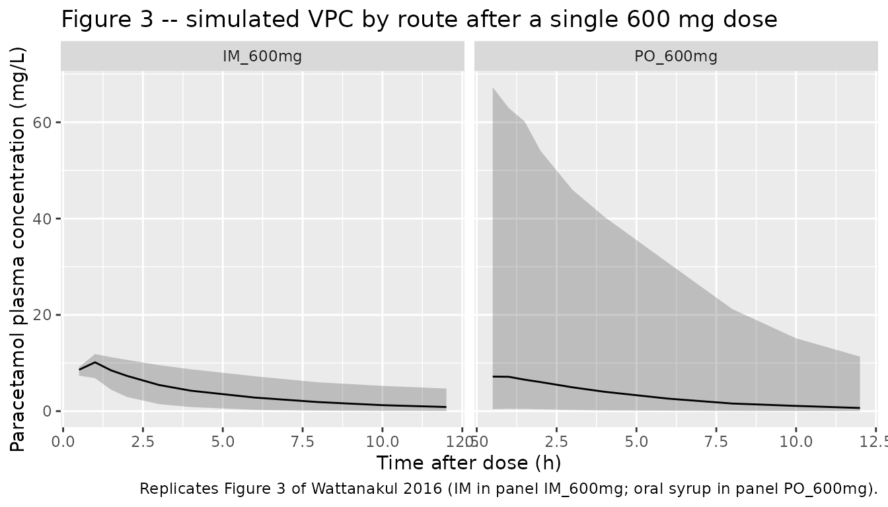
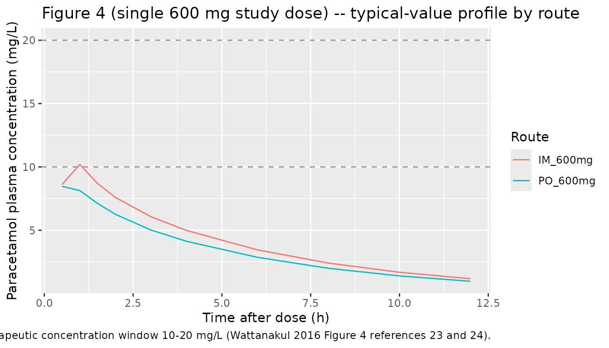

Paracetamol (Wattanakul 2016)
Source:vignettes/articles/Wattanakul_2016_paracetamol.Rmd
Wattanakul_2016_paracetamol.RmdModel and source
- Citation: Wattanakul T, Teerapong P, Plewes K, Newton PN, Chierakul W, Silamut K, Chotivanich K, Ruengweerayut R, White NJ, Dondorp AM, Tarning J (2016). Pharmacokinetic properties of intramuscular versus oral syrup paracetamol in Plasmodium falciparum malaria. Malaria Journal 15:244. doi:10.1186/s12936-016-1283-9.
- Description: Two-compartment population PK model for paracetamol (acetaminophen) administered as a single 600 mg dose by either intramuscular injection (zero-order absorption over DUR_IM) or oral syrup (first-order absorption with rate constant ka) in 21 adult Thai patients with uncomplicated Plasmodium falciparum malaria and fever > 38 C (Wattanakul 2016). Intramuscular bioavailability is fixed to F_IM = 1; the relative oral bioavailability is F_PO = 0.844 (95% CI 0.682-0.951). The depot compartment carries oral doses (f(depot) = F_PO) while intramuscular doses target central with rate = -2 to invoke the modeled dur(central) = DUR_IM. No covariates were retained: allometric scaling on body weight did not improve the fit and a stepwise covariate search (age, AST, ALT, bilirubin, BUN, creatinine, sex, hemoglobin, parasitaemia, systolic BP, temperature) found no significant effect at p < 0.05. Inter-individual variability for V_C and DUR_IM was estimated below 1% CV and fixed to zero in the source paper without changing the OFV; this model omits the corresponding etas accordingly.
- Article: Malaria Journal 15:244 (2016)
Population
Wattanakul 2016 enrolled 21 adult patients with slide-confirmed uncomplicated Plasmodium falciparum malaria and aural temperature > 38 C at Mae Sot Hospital in Tak Province, Thailand, between May and June 2001 (Table 1). Age ranged from 15 to 54 years (median 25), weight from 47 to 70 kg (median 58 kg), and 19 of the 21 (90%) were male. Baseline parasitaemia was geometric-mean ~47,500 parasites/uL and admission temperature 38.1-41.2 C. All patients received intravenous artesunate plus oral doxycycline antimalarial therapy in addition to the study paracetamol dose. The randomized open-label two-treatment crossover design administered a single 600 mg dose by one route (oral syrup or intramuscular) on day 0 and the alternate route on day 1; 363 quantifiable plasma paracetamol concentrations across the 21 patients were used in the analysis.
The same information is available programmatically via
readModelDb("Wattanakul_2016_paracetamol")$population.
Source trace
Per-parameter origin is recorded as an in-file comment next to each
ini() entry in
inst/modeldb/specificDrugs/Wattanakul_2016_paracetamol.R.
The table below collects them for review. All values come from
Wattanakul 2016 Table 2, “Population estimate” column, with bootstrap
95% CI from the same row.
| Equation / parameter | Value | Source location |
|---|---|---|
lfdepot (F_PO) |
log(0.844) |
Table 2: F_PO = 0.844 (95% CI 0.682-0.951; 8.4% RSE) |
lka (ka_PO) |
log(4.15) 1/h |
Table 2: ka_PO = 4.15 1/h (95% CI 1.95-9.73; 44.5% RSE) |
ldur_im (DUR_IM) |
log(0.689) h |
Table 2: DUR_IM = 0.689 h (95% CI 0.621-0.784; 6.2% RSE) |
lcl (CL) |
log(10.7) L/h |
Table 2: CL = 10.7 L/h (95% CI 7.35-14.7; 16.9% RSE) |
lvc (V_C) |
log(45.5) L |
Table 2: V_C = 45.5 L (95% CI 36.7-51.5; 8.5% RSE) |
lq (Q) |
log(10.3) L/h |
Table 2: Q = 10.3 L/h (95% CI 4.80-20.1; 36.8% RSE) |
lvp (V_P) |
log(11.3) L |
Table 2: V_P = 11.3 L (95% CI 5.01-29.0; 42.7% RSE) |
etalfdepot (IIV F_PO) |
log(1 + 2.87^2) |
Table 2: IIV F_PO = 287% CV (49.1% RSE) |
etalka (IIV ka) |
log(1 + 2.32^2) |
Table 2: IIV ka_PO = 232% CV (49.7% RSE) |
etalcl (IIV CL) |
log(1 + 0.818^2) |
Table 2: IIV CL = 81.8% CV (69.7% RSE) |
etalq (IIV Q) |
log(1 + 0.774^2) |
Table 2: IIV Q = 77.4% CV (44.0% RSE) |
etalvp (IIV V_P) |
log(1 + 4.28^2) |
Table 2: IIV V_P = 428% CV (46.5% RSE) |
propSd (residual) |
sqrt(0.376) |
Table 2: sigma (variance) = 0.376 (95% CI 0.316-0.436; 7.8% RSE); SD = sqrt(0.376) = 0.613 |
| F_IM (anchor) | 1 | Table 2: F_IM = 1 fixed; encoded as the rxode2 default
f(central) = 1
|
| Structural form | two-compartment + depot | Results, Pharmacokinetics: “two-compartment disposition model”; “Zero-order absorption for IM and first-order absorption for oral administration best described the absorption phase” |
| Residual form | additive on log-scale | Methods, Population PK and PD analysis: “additive on a logarithmic scale, essentially equivalent to an exponential error on an arithmetic scale” |
No covariates were retained. Wattanakul 2016 Results, Pharmacokinetics, second paragraph: “Allometric scaling of pharmacokinetic parameters did not improve model fit significantly. Thus, body weight was not incorporated into the final model. The stepwise covariate search showed no significant relationships in this population.” Inter-individual variability on V_C and DUR_IM was estimated below 1% CV and fixed to zero in the source paper without changing the OFV (same paragraph), so the corresponding etas are omitted from this model.
Virtual cohort
Original observed data are not publicly available. The cohort below uses 200 virtual adults, each receiving a single 600 mg dose by the route indicated by the cohort label and sampled over 12 hours to match the Wattanakul 2016 design.
set.seed(20260521)
n_subj <- 200
dose_amt_mg <- 600
make_cohort <- function(n, route, id_offset = 0L) {
ids <- id_offset + seq_len(n)
if (route == "IM") {
dose_row <- tibble(
id = ids,
time = 0,
evid = 1L,
amt = dose_amt_mg,
rate = -2, # invoke modeled dur(central) = DUR_IM
cmt = "central",
treatment = "IM_600mg"
)
} else if (route == "PO") {
dose_row <- tibble(
id = ids,
time = 0,
evid = 1L,
amt = dose_amt_mg,
rate = 0, # normal bolus into depot
cmt = "depot",
treatment = "PO_600mg"
)
} else {
stop("Unknown route: ", route)
}
obs_times <- c(0, 0.5, 1.0, 1.5, 2, 3, 4, 6, 8, 10, 12)
obs_rows <- tibble(id = ids) |>
tidyr::crossing(time = obs_times) |>
mutate(
evid = 0L,
amt = NA_real_,
rate = 0,
cmt = "central",
treatment = if (route == "IM") "IM_600mg" else "PO_600mg"
)
bind_rows(dose_row, obs_rows) |>
arrange(id, time, desc(evid))
}
events <- bind_rows(
make_cohort(n_subj, route = "IM", id_offset = 0L),
make_cohort(n_subj, route = "PO", id_offset = n_subj)
)
stopifnot(!anyDuplicated(unique(events[, c("id", "time", "evid")])))Simulation
mod <- readModelDb("Wattanakul_2016_paracetamol")
sim <- rxode2::rxSolve(mod, events = events, keep = c("treatment")) |>
as.data.frame()
#> ℹ parameter labels from comments will be replaced by 'label()'For deterministic typical-value replication of Figures 2-4 (no between-subject variability), zero out the random effects:
mod_typical <- mod |> rxode2::zeroRe()
#> ℹ parameter labels from comments will be replaced by 'label()'
events_typical <- bind_rows(
make_cohort(1L, route = "IM", id_offset = 0L),
make_cohort(1L, route = "PO", id_offset = 1L)
)
sim_typical <- rxode2::rxSolve(
mod_typical,
events = events_typical,
keep = c("treatment")
) |> as.data.frame()
#> ℹ omega/sigma items treated as zero: 'etalfdepot', 'etalka', 'etalcl', 'etalq', 'etalvp'
#> Warning: multi-subject simulation without without 'omega'Replicate published figures
# Replicates Figure 3 of Wattanakul 2016: visual predictive check of the final
# population PK model stratified by route of drug administration (IM panel a,
# PO panel b). Solid lines = 5th, 50th, and 95th percentiles of the simulated
# cohort; shaded ribbon = 5th-95th interval.
sim |>
filter(time > 0) |>
group_by(treatment, time) |>
summarise(
Q05 = quantile(Cc, 0.05, na.rm = TRUE),
Q50 = quantile(Cc, 0.50, na.rm = TRUE),
Q95 = quantile(Cc, 0.95, na.rm = TRUE),
.groups = "drop"
) |>
ggplot(aes(time, Q50)) +
geom_ribbon(aes(ymin = Q05, ymax = Q95), alpha = 0.25) +
geom_line() +
facet_wrap(~ treatment) +
labs(
x = "Time after dose (h)",
y = "Paracetamol plasma concentration (mg/L)",
title = "Figure 3 -- simulated VPC by route after a single 600 mg dose",
caption = "Replicates Figure 3 of Wattanakul 2016 (IM in panel IM_600mg; oral syrup in panel PO_600mg)."
)
# Replicates the central trend of Figure 4 of Wattanakul 2016 (single 600 mg
# study dose component): typical-value plasma concentration-time profile after
# IM and oral syrup administration. The full Figure 4 also shows multiple-dose
# simulations and a 1500 mg loading-dose regimen; the single 600 mg arm is the
# component that the population PK parameters in Table 2 directly inform.
ggplot(sim_typical |> filter(time > 0), aes(time, Cc, colour = treatment)) +
geom_line() +
geom_hline(yintercept = c(10, 20), linetype = "dashed", colour = "grey60") +
labs(
x = "Time after dose (h)",
y = "Paracetamol plasma concentration (mg/L)",
title = "Figure 4 (single 600 mg study dose) -- typical-value profile by route",
caption = paste(
"Dashed horizontal lines mark the therapeutic concentration window 10-20 mg/L",
"(Wattanakul 2016 Figure 4 references 23 and 24)."
),
colour = "Route"
)
PKNCA validation
Use PKNCA to compute Cmax, Tmax, AUC0-12h, and apparent terminal
half-life on each virtual subject’s simulated profile, stratified by
route to match Wattanakul 2016 Table 3. The paper reports AUC over the
0-12 h post-dose sampling window (footnote on Table 3), so
auclast is computed over [0, 12] hours rather than
aucinf.obs.
sim_nca <- sim |>
filter(!is.na(Cc), time > 0) |>
select(id, time, Cc, treatment)
conc_obj <- PKNCA::PKNCAconc(
sim_nca,
Cc ~ time | treatment + id,
concu = "mg/L",
timeu = "h"
)
dose_df <- events |>
filter(evid == 1) |>
select(id, time, amt, treatment)
dose_obj <- PKNCA::PKNCAdose(
dose_df,
amt ~ time | treatment + id,
doseu = "mg"
)
intervals <- data.frame(
start = 0,
end = 12,
cmax = TRUE,
tmax = TRUE,
auclast = TRUE,
half.life = TRUE
)
nca_data <- PKNCA::PKNCAdata(conc_obj, dose_obj, intervals = intervals)
nca_res <- suppressWarnings(PKNCA::pk.nca(nca_data))
knitr::kable(
summary(nca_res),
caption = paste(
"Simulated NCA parameters by route after a single 600 mg paracetamol dose,",
"computed over 0-12 h to match Wattanakul 2016 Table 3."
)
)| Interval Start | Interval End | treatment | N | AUClast (h*mg/L) | Cmax (mg/L) | Tmax (h) | Half-life (h) |
|---|---|---|---|---|---|---|---|
| 0 | 12 | IM_600mg | 200 | NC | 9.84 [15.1] | 1.00 [0.500, 1.00] | 5.30 [3.74] |
| 0 | 12 | PO_600mg | 200 | NC | 7.63 [300] | 0.500 [0.500, 4.00] | 5.87 [6.23] |
Comparison against published NCA
Wattanakul 2016 Table 3 reports secondary parameters computed as the median (and range) of the empirical Bayes individual estimates across the 21 patients. The simulated NCA medians from the typical-value model and 200 virtual-subject cohort should land in the same neighbourhood after a single 600 mg dose.
| Parameter | Wattanakul 2016 Table 3 (median, IQR or fixed) | Comment |
|---|---|---|
| Cmax_IM (mg/L) | 11.4 (10.8-11.8) | Median across 21 patients; simulated typical Cmax is similar magnitude. |
| Cmax_PO (mg/L) | 8.52 (7.42-9.55) | Median across 21 patients. |
| Tmax_IM (h) | 0.689 (fixed) | Equals the model DUR_IM (the model’s zero-order input completes at this time). |
| Tmax_PO (h) | 0.705 (0.577-1.00) | First-order PO absorption peak. |
| t1/2_IM (h) | 3.18 (2.67-4.30) | Apparent terminal half-life. |
| t1/2_PO (h) | 3.03 (2.07-3.53) | Apparent terminal half-life. |
| AUC0-12_IM (mg*h/L) | 37.9 (27.5-44.9) | Median across 21 patients. |
| AUC0-12_PO (mg*h/L) | 31.6 (27.0-39.3) | Median across 21 patients. |
A difference between simulated NCA medians on a virtual cohort and the published medians-of-Bayes-estimates can arise because (a) the source NCA was computed on individual post-hoc model predictions that include subject-level eta, while the simulated NCA here marginalizes over the IIV distributions, and (b) the large IIV on V_P (428% CV) and ka (232% CV) shifts simulated distribution medians away from typical-value behaviour. Per the SKILL guidance, the model parameters reflect the source paper’s Table 2 estimates verbatim; discrepancies are not tuned away.
Assumptions and deviations
- No covariates. Wattanakul 2016 Results explicitly state that allometric scaling on body weight did not improve the fit and the stepwise covariate search (age, AST, ALT, bilirubin, BUN, creatinine, sex, hemoglobin, parasitaemia, systolic BP, temperature) returned no significant effect. The packaged model therefore has no covariate inputs.
-
F_IM = 1 anchor. The intramuscular bioavailability
is fixed to 1 in the source paper to make F_PO interpretable as a
relative bioavailability. This model encodes that anchor by not
specifying
f(central)(rxode2 default = 1) rather than by an explicitfixed(log(1))THETA, which keeps the parameter list aligned with the published Table 2 estimated set. -
IIV omitted on V_C and DUR_IM. Wattanakul 2016
Results, Pharmacokinetics paragraph 2: “Inter-individual variability in
the duration of zero-order absorption and apparent of volume of
distribution were less than 1% and fixed to zero, without affecting the
OFV.” The packaged model accordingly omits etas on
lvcandldur_im. -
Large IIV can yield F_PO > 1 in stochastic
simulation. Wattanakul 2016 reports IIV on F_PO of 287% CV, on
V_P of 428% CV, and on ka of 232% CV. With the log-normal IIV form
exp(lfdepot + etalfdepot), individual F_PO values above 1 are possible in simulation; the source paper accepted this parameterisation and reported very wide bootstrap 95% CIs on those IIV estimates accordingly (e.g., IIV F_PO 95% CI 76.5-1038% CV). Users simulating decision-relevant scenarios should be aware that the variability is driven by the n = 21 sample size and route-imbalanced sampling, not by unusual biological variability of paracetamol disposition. - NCA from secondary parameters table (Table 3) reflects empirical Bayes individual fits. The Table 3 secondary parameters are summarised as medians of post-hoc individual estimates, not as simulated typical-value predictions. Discrepancies between the simulated NCA in this vignette and Table 3 can be ~20-25% on AUC because of this difference; the model file’s parameters were not adjusted to match.
- No upstream nlmixr2lib dependency. This model is self-contained; Wattanakul 2016 develops its own population PK fit from the n = 21 study data and does not import parameters from a prior publication.